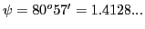
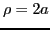
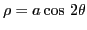
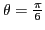

Next: Solution of equations having Up: Simple applications of the Previous: Lengths of polar subtangent Contents Index
Solution: , .
SAGE can help with this problem. Using (6.12) but with  in place of
in place of
 for typographical simplicity, we have
for typographical simplicity, we have
[fontsize=\small,fontfamily=courier,fontshape=tt,frame=single,label=\sage]
sage: a,t = var("a,t")
sage: r = a*sin(t/3)^3
sage: tanpsi = r/diff(r,t); tanpsi
sin(t/3)/cos(t/3)
Therefore,
, so
.
Therefore, according to (6.13), we have
, as expected.
Solution:  and .
Solution: .
Solution: At origin ; at two other points .
| curve | point | solution (if given) |
| (a) |
|
|
| (b) |  | |
| (c) | origin | |
| (d) | origin | |
| (e) | origin |
|
| (f) | origin | |
| (g)  | origin | |
| (h) | ||
| (i) |  | |
| (j)
|
|
|
| (k) |
|
|
| (l) |
Solution:
 .
.
Solution:
subt. =
, tan. =
,
subn. =  , nor. =
.
The student should note the fact that the subnormal is constant.
, nor. =
.
The student should note the fact that the subnormal is constant.
Solution: subt. = , tan. = , subn. = , nor. = .
When  , we notice that subt. = subn., and tan. = nor.
, we notice that subt. = subn., and tan. = nor.
Solution: 0 and
 .
.